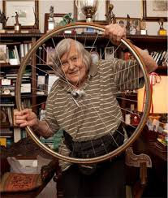

Margherita a été végétarienne toute sa vie, mais comme elle l'a dit elle-même, "sans aucun mérite et aucun sacrifice". Ses parents, avant même sa naissance, s'étaient convertis à la théosophie, une philosophie indienne qui prône le respect de tous les êtres vivants. Margherita parle de l'étonnement de ses camarades de classe et des préoccupations concernant son régime alimentaire, mais cela ne l'a jamais empêchée de faire du sport : elle a participé à des tournois scolaires, remporté deux championnats universitaires nationaux d'athlétisme, et ses balades à vélo sont célèbres.
Dès son plus jeune âge, Margherita a montré sa passion pour les vélos : de l'enthousiasme pour le Giro d'Italia, aux courses avec des bouchons de champagne simulant le Tour de France, jusqu'à obtenir son premier vélo. Un maçon, devenu plus tard un ami de la famille, lui a appris à faire du vélo avec un vélo adulte lourd, car il n'y avait pas de vélos pour les enfants.
À l'été '37, ses parents lui ont offert un vélo en cadeau, et à partir de ce moment, ses tours ont commencé à Prato, Pistoia, Empoli, Pratolino (malgré le voyage de 18 kilomètres), et partout où elle pouvait aller. Après avoir abandonné les vélos pendant des années, préférant les véhicules à moteur, en '64, lorsqu'elle est arrivée à Trieste, elle est remontée en selle pour pédaler jusqu'aux Topolini di Barcola et chez elle après le travail. Bientôt, des balades en ville, elle est passée à de longs trajets le samedi sur la côte et a découvert le Carso avec ses amis cyclistes, appréciant le sentiment de liberté en courant avec le vent dans le visage et en regardant la nature. Dans les dernières années de sa vie, malheureusement, Margherita a dû accrocher son vélo.
L'un des contes de fées qui accompagnait Margherita dans son enfance est sans aucun doute l'histoire de Pinocchio, la marionnette en bois connue pour ses mensonges et sa naïveté. Margherita réfléchit aux analogies entre l'histoire de Collodi et notre société, sur la façon dont cette dernière est pleine de Pinocchios et de fraudeurs. Un autre protagoniste des histoires de Margherita est Ulysse : dans son voyage de retour de la guerre de Troie, il rencontre divers dangers qui l'empêchent de retourner à Ithaque. Ulysse, contrairement à Pinocchio, est intelligent, et grâce à son ingéniosité et à ses astuces, il parvient à échapper aux dangers. Elle se souvient également de Peter Pan, de l'enfant qui ne voulait pas grandir, d'Alice au Pays des Merveilles avec ses personnages absurdes et ses paysages impossibles, et de Pippi Calzelunghe, une fille intrépide et indépendante devenue un modèle à une époque où l'égalité des droits commençait à s'affirmer.
Margherita s'est toujours déclarée athée. Sa famille s'était convertie à la théosophie, une philosophie indienne prônant le respect de tous les êtres vivants. En ce qui concerne ses convictions, elle a toujours cru que les miracles pouvaient s'expliquer comme des phénomènes naturels et soutenait l'existence d'autres formes de vie provenant d'autres planètes. Elle méprisait toujours les superstitions et se définissait comme anticléricale, mais malgré cela, elle n'a jamais adopté de positions extrêmes sur le sujet.
Un exemple de ses idées peut être trouvé dans le livre "Io Credo", qui rassemble les conversations entre la scientifique athée Margherita Hack et le prêtre catholique don Pierluigi di Piazza. Bien qu'ils aient des visions différentes de la religion et de l'existence de Dieu, ils partagent des valeurs éthiques communes telles que la solidarité, le respect de l'environnement et la justice sociale. Margherita Hack, bien qu'athée, admire la beauté de l'univers sans exclure la possibilité d'une origine transcendante. Sa vision scientiste limite la discussion sur la signification et le sens de l'univers, mais ne nie pas l'existence de choses au-delà de l'explication scientifique. Sa perspective représente une intersection intéressante entre une approche scientifique et une ouverture à l'émerveillement de l'existence.
Elle s'est opposée à l'ouverture de centres nucléaires en Italie, car elle en reconnaissait les dangers et les responsabilités, mais elle soutenait pleinement et jugeait nécessaire la recherche nucléaire. Hack a toujours plaidé en faveur des droits de l'homme en Italie et dans le monde, soutenu le féminisme, soutenu publiquement les lois en faveur de l'avortement, de l'euthanasie et des droits des homosexuels.
Margherita a toujours été dévouée à la politique. Dans sa jeunesse, elle se proclamait fasciste, mais en 1938, elle décida de devenir antifasciste et s'identifia à la pensée socialiste puis communiste. Elle méprisait toujours la politique italienne et comparait certains politiciens à des personnages de contes de fées comme Pinocchio. En Italie, elle était célèbre pour ses opinions antireligieuses et ses critiques constantes de l'Église catholique, de sa hiérarchie et de ses institutions. En plus de s'intéresser toujours à la politique, elle y participa également : elle se présenta aux élections régionales italiennes de 2005 en Lombardie sur la liste du Parti communiste italien. Après l'élection, elle céda son siège à Bebo Storti. Elle rejoignit à nouveau le Parti communiste italien lors des élections générales italiennes de 2006. Elle fut candidate pour diverses circonscriptions de la Chambre des députés, mais décida de céder son siège pour se consacrer à l'astronomie.
 Italien
Italien Anglais
Anglais Espagnol
Espagnol Français
Français Allemand
Allemand Serbe
Serbe Albanais
Albanais Roumain
Roumain Slovaque
Slovaque